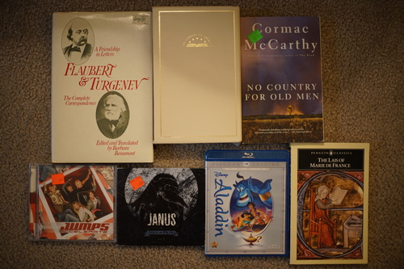

It's been a long time again already! I'm very neglectful...
Ryan and I went to see my favorite mom! We heard about another local coffee shop in my hometown, so we checked it out. It was very good and very expensive. We got some well brewed pourovers~ Then went back the next morning and got another pair.
I got back and was made fun of for not updating my computer, so I decided to upgrade my computer from Debian 10 to 12. A smart fooligan would have researched a little to find out this is a very bad idea to do a direct 10 -> 12 upgrade. I did no research. I paid the price!
It's been a few days now and I have a fresh install of Debian 12. I have things mostly up and running with one exception. I decided to implement a ramdisk for my firefox profile! I have 2 SSD only in my PC and I'd like to not wear them out faster than I have to. I still haven't gotten startup/shutdown scripts implemented yet, but instead of working on that, I am writing this blog post.
Unfortunately, that was not the exception. The drivers for the joycon were changed, and the joycon no longer outputs the same events. My chiizukeiki is totally useless now! I'll have to put in a bit of work to fix it. Good thing I have plenty of sketchbooks right...

What does a hat do best? Not dolling... Not drawing... Shopping?!?! oh dear....
The outer metal has a design?! How many of these do we have now?
I can't wait for ryan to wear the Ancient Aliens one.
You would NOT believe how many baby cows I've seen this month
Someone finally donated the remix albums?! I can't believe it! I am not interested in Sarachmalachlin herself, but I am interested in a few of the guys who remixed these songs. These two were on my wishlist due to me not wanting to go through the wikipedia page because I couldn't remember her remix albums both have remix in the name.
I offered to give mine to Ryan but he wanted his own.
the guy at the yard sale handed me back my money and told me to take it
I keep one of these in my purse and have been looking for a second one for my sewing kit
Another seller told me to take them and make something cool
This doesn't look particularly advanced to me...
Ryan was disappointed to discover that these fit on literally 0 books.
eggs
this is too much, my dudes. this is my punishment. no more hauls....
We went back to the thrift store where nearly everything is a few cents. There's no way this place is making more than $20 a day. Everything not priced came out to $4 total, but I did mark the ones from the free pile as free.
I found a yard sale down the street with a poll for Edward vs Jacob. I voted for Edward of course! Tune in next week to find out who Ryan voted for.
She was selling the camera so cheap because it was broken. The solution was: put a fully charged pair of batteries in.
I thought this was like a movie but it seems to be an album? Don't kpoppers buy this kind of thing?
I have never heard of this guy
Also never heard of this group.
Good for these guys for getting to work before noon!
Did ya'll know I'm a 1D megafan now? Someone tell me if they have a good song please! Or maybe I'll tell you?!
THIS IS TORTURE. STOP SHOPPING NOW!!!!
SMH!!! MEN!!!!
I'M GOING TO BED.